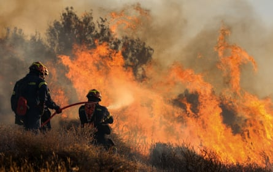
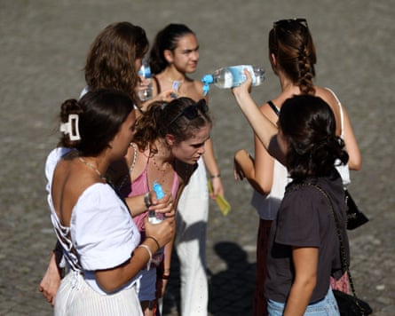
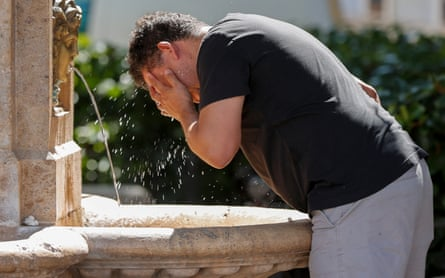

“I t’s just too much, isn’t it?” says Julie, a retiree in Stanford-le-Hope, Essex, about the 42C (107.6F) heat that her brother had seen scorch Spain last week. The former local government worker has felt summers get hotter over her lifetime and says she “couldn’t stand” such high heat herself.
But like many who experienced Europe’s first heatwave of the summer, Julie does not sound overly alarmed. She worries about climate breakdown for young people, but is not concerned about herself. She thinks more climate action would be nice, but does not know what can be done about it. She does not have much faith in the government.
“It’s like everything else,” she says. “I think it’s all too little, too late.”
As heatwaves engulfed large swathes of Europe and North America last week – the latest in a stream of deadly extremes made worse by fossil fuel pollution – green groups are frustrated that increasingly violent weather has not spurred the urgent support for climate action they had expected.
Governments across the rich world continue to roll back policies to stop the planet from heating, while far-right parties that deny climate science lash out at environment rules even as disasters unfold. Their voters, while rarely climate deniers themselves, seem to tolerate their energetic attacks on environmental policy, if not support them.
The views of someone like Julie – who declined to reveal her voting preference – sounded similar to what was seen across the country, said Ed Hodgson, an analyst at the research group More in Common who has run focus groups on climate action.

Spectators at the Wimbledon tennis tournament in London try to cool down on Tuesday.Photograph: Toby Melville/Reuters
Polls taken over the second-last weekend of June show most people in the UK found the previous week of weather too hot, are worried it will get hotter, and hold the climate crisis at least partly responsible. But the nonprofit also found the share of people concerned about climate change has fallen over the past year, dipping from 68% to 60%. Support for the UK’s target to hit net zero emissions by 2050 fell even further, plunging from 62% to 46%.
“The issue is really that there are so many other concerns now,” said Hodgson, citing the organisation’s data tracking the top issues that people face each week. “Three years ago you’d have the cost of living first, then the National Health Service, and then immigration and climate – those two would compete for third place. Now, when we do those polls, climate is near the bottom of the list.”
The contradictions are visible in towns such as Stanford-le-Hope, where Julie lives, which is among the few already represented in parliament by the rightwing populist Reform UK. A YouGov poll last month found just over half of Reform voters wanted a heatwave in the coming weeks.
The party, which has promised to scrap the net zero target and “unlock Britain’s vast oil and gas reserves”, is projected to win eight of the 10 most flood-prone constituencies at the next general election, according to an analysis in May by the NGO Global Witness and Round Our Way, a campaign group.
Far-right parties across mainland Europe have been even more vocal in using the heatwave to take aim at climate policy, even as blazing wildfires force thousands to flee their homes and doctors warn of widespread excess deaths.
Firefighters battle flames during wildfires on the Greek island of Crete on Friday.Photograph: Xinhua/Shutterstock
In Spain, where temperatures reached highs of 46C on Tuesday, the Vox leader, Santiago Abascal, mocked a government promise to regulate fear-based advertising by asking if they were also going to “ban the propaganda of climate religion”. In Italy , which has limited outdoor work during the hottest parts of the day in most of the country, the Lega party MP Claudio Borghi said: “Climate change has always existed, the causes are anything but clear, and the solutions are contrary to what … is correct.”
In Germany , the Alternative für Deutschland co-chair Alice Weidel shared a social media post from a climate sceptic that compared the heat on Tuesday to slightly hotter temperatures on the same day in 1952, as the country was “clearing away the rubble of war”. The post took a swipe at the World Economic Forum, the German public broadcaster and the Green party.
The biggest political row over the heat erupted in France, where the National Rally figurehead, Marine Le Pen, called for a “major” air conditioning plan – one week after the party failed in its parliamentary push to halt new wind and solar projects. In an opinion article in Le Figaro on Thursday, the interior minister, Bruno Retailleau, a conservative, called to stop support for renewable energy and expand France’s nuclear energy sector.
Young girls pour water on their heads as temperatures exceed 40C in Berlin.Photograph: Maryam Majd/Getty Images
The proposal earned rebukes from the ecology minister, Agnès Pannier-Runacher, who described it as “petty politics” that would write Algeria a check for oil, and the former prime minister Gabriel Attal, who called it an “incomprehensible” misstep. “As we endure several days of an unprecedented heatwave, we are witnessing a troubling resurgence of anti-science scepticism,” he said.
Some far-right parties have focused their attention on old-school climate denial, while others have moved from questioning the science to aggressively campaigning against solutions.
“I don’t think the extreme heat is being weaponised, but the efforts to limit it certainly are,” said Ciarán Cuffe, a co-chair of the European Green party and former Irish environment minister. He added that Le Pen’s call for more air conditioning – which he said should be one solution among many – may even represent a shift in strategy. “It’s a recognition that these heatwaves are happening, and that they are extreme.”
The paradox is that far-right parties bashing green rules are polling well above 20% in several European countries, even though the share of people who deny climate science is typically in single digits. In the UK, pollsters find just 6% of Reform voters list environmental policy as a reason for voting for the party, according to More in Common.
That said, the level of threat perception among their voters is much higher than in other parties, said Hodgson. “They see threats around them and think we need a strong response. So it makes sense for politicians to campaign around those moments.”
A man cools off in a fountain in Valencia, Spain.Photograph: Manuel Bruque/EPA
Climate campaigners have argued that the far right’s success in dominating the climate narrative is weakening support for action and providing centrist parties cover to scrap green policies, even if it has failed to create a widespread backlash against green policy.
“The far right has a strategy but everyone else doesn’t,” said Luisa Neubauer, a German activist from Fridays for Future, which staged its first night-time protest against climate inaction outside the German economy ministry on Wednesday, as a result of the high heat.
Too many people in power or with platforms “have not yet understood that we’re in a war of language – and a war of the truth – about the climate”, she added. “And too few of us are actively standing in the way of that.”